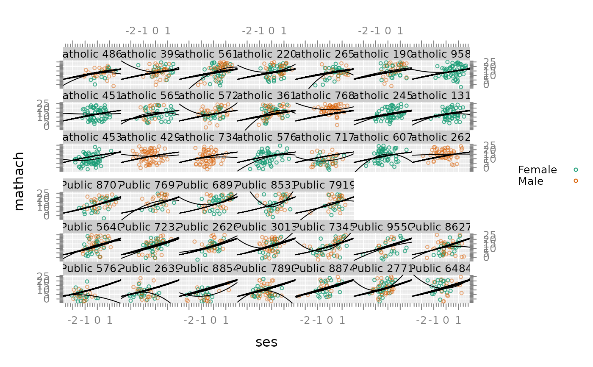
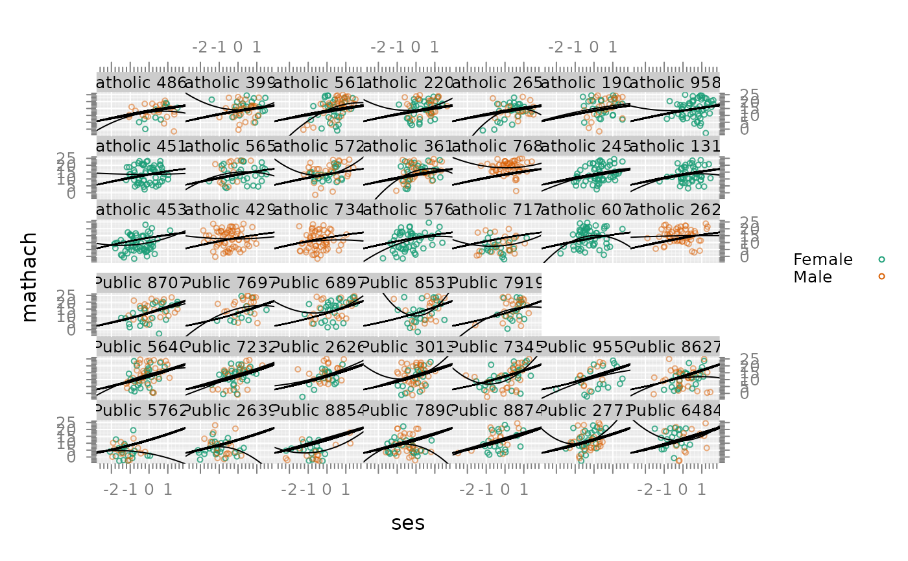

Prediction data frame to caompute predicted values
Arguments
- ...
names of variables or named arguments with values. The arguments that are names are evaluated in the environment, which will typically be a data frame supplied as an environment with the
withfunction. Named arguments are evaluted in the usual way. The unique values of each argument are supplied toexpand.gridto create a data frame whose rows are the Cartesian product of the unique values of the input. See comments on usage in the examples.
Details
Plotting predicted values for a model often requires computing
predicted values on a grid of predictor values other than the
original data set. Categorical variables (character or factor)
must be of the same form (same set of character values in the case
of character variables and the same levels in the same order in the case of
factor variables) as they appear in the model data frame on which the
model was fitted. pred.grid facilitates the process, in comparison
with expand.grid, by allowing references to variables
in the model data frame by name or by specifying a vector of values
in the case of numeric predictors.
Examples
hs <- within(
hs,
{
id <- paste(Sector, school) %>%
as.factor %>%
reorder(ses + I(Sector == 'Catholic')*1000)
ses_mean <- capply(ses, id, mean, na.rm = TRUE)
mathach_mean <- capply(mathach, id, mean, na.rm = TRUE)
})
fit1 <- lm(mathach ~ (ses + I(ses^2)) * id, hs)
pred1 <- with(hs, pred.grid(id, ses = seq(-3,3, .1)))
pred1$fit1 <- predict(fit1, newdata = pred1)
#> Warning: contrasts dropped from factor id
fit2 <- lm(mathach ~ (ses + I(ses^2))* Sector, hs)
# add Sector to pred1
head(pred1); dim(pred1)
#> id ses fit1
#> 1 Public 5762 -3 3.6405505
#> 2 Public 2639 -3 -1.2759231
#> 3 Public 8854 -3 8.0605939
#> 4 Public 7890 -3 -6.1741051
#> 5 Public 8874 -3 0.4196072
#> 6 Public 2771 -3 23.3842402
#> [1] 2440 3
pred2 <- merge(
pred1,
up(hs, ~id),
by = 'id',
all.x = TRUE)
head(pred2); dim(pred2)
#> id ses fit1 school Size Sector PRACAD DISCLIM mathach_mean
#> 1 Catholic 1317 -2.7 1.490678 1317 455 Catholic 0.95 -1.694 13.17769
#> 2 Catholic 1317 0.7 13.732780 1317 455 Catholic 0.95 -1.694 13.17769
#> 3 Catholic 1317 -2.4 3.434712 1317 455 Catholic 0.95 -1.694 13.17769
#> 4 Catholic 1317 0.4 13.516443 1317 455 Catholic 0.95 -1.694 13.17769
#> 5 Catholic 1317 0.3 13.407176 1317 455 Catholic 0.95 -1.694 13.17769
#> 6 Catholic 1317 -0.3 12.361448 1317 455 Catholic 0.95 -1.694 13.17769
#> ses_mean Freq
#> 1 0.3453333 48
#> 2 0.3453333 48
#> 3 0.3453333 48
#> 4 0.3453333 48
#> 5 0.3453333 48
#> 6 0.3453333 48
#> [1] 2440 11
pred2$fit2 <- predict(fit2, newdata = pred2)
# Existing methods allow you to graph lines fitted
# within each panel
library(lattice)
library(latticeExtra)
p <- xyplot(mathach ~ ses | id, hs, groups = Sex,
layout = c(7,6),
alpha = c(.8, .5),
auto.key = list(space = 'right'),
between = list(y = rep(c(0,.4,0), c(2,1,2))),
skip = rep(c(F,T,F), c(19,2,20)))
p
p + glayer(panel.smoother(...)) #
# Using 'pred.grid' and 'expand.grid' makes it easier
# to graph lines fitted with models
td(pch = 1, cex = .5)
p
p +
xyplot(fit1 ~ ses | id, pred1, type = 'l')
 p +
xyplot(fit1 ~ ses | id, pred1, type = 'l') +
xyplot(fit2 ~ ses | id, pred2, type = 'l', col = 'black') # ?????

pred2 <- sortdf(pred2, ~ ses)
p +
xyplot(fit1 ~ ses | id, pred1, type = 'l') +
xyplot(fit2 ~ ses | id, pred2, type = 'l', col = 'black') # zig-zagging gone
# Referring to other variables in panel functions
xyplot(mathach ~ ses | id, hs, groups = Sex,
layout = c(7,6),
cex = .4,
ses_mean = hs$ses_mean,
mathach_mean = hs$mathach_mean,
par.strip.text = list(cex = .7),
auto.key = list(space = 'right'),
between = list(y = rep(c(0,.4,0), c(2,1,2))),
subscripts = TRUE,
skip = rep(c(F,T,F), c(19,2,20))) +
glayer(panel.smoother(..., se = FALSE, lwd = 2, lty =1)) +
layer(panel.abline(v=ses_mean[subscripts],...,col = 'gray')) +
layer(panel.abline(h=mathach_mean[subscripts],...,col = 'gray'))
p + glayer(panel.abline(v=ses_mean))
p + xyplot(fit1 ~ ses | id, pred1, type = 'l')
p +
xyplot(fit1 ~ ses | id, pred1, type = 'l') +
xyplot(fit2 ~ ses | id, pred2, type = 'l', col = 'black') # ?????

pred2 <- sortdf(pred2, ~ ses)
p +
xyplot(fit1 ~ ses | id, pred1, type = 'l') +
xyplot(fit2 ~ ses | id, pred2, type = 'l', col = 'black') # zig-zagging gone
# Referring to other variables in panel functions
xyplot(mathach ~ ses | id, hs, groups = Sex,
layout = c(7,6),
cex = .4,
ses_mean = hs$ses_mean,
mathach_mean = hs$mathach_mean,
par.strip.text = list(cex = .7),
auto.key = list(space = 'right'),
between = list(y = rep(c(0,.4,0), c(2,1,2))),
subscripts = TRUE,
skip = rep(c(F,T,F), c(19,2,20))) +
glayer(panel.smoother(..., se = FALSE, lwd = 2, lty =1)) +
layer(panel.abline(v=ses_mean[subscripts],...,col = 'gray')) +
layer(panel.abline(h=mathach_mean[subscripts],...,col = 'gray'))
p + glayer(panel.abline(v=ses_mean))
p + xyplot(fit1 ~ ses | id, pred1, type = 'l')